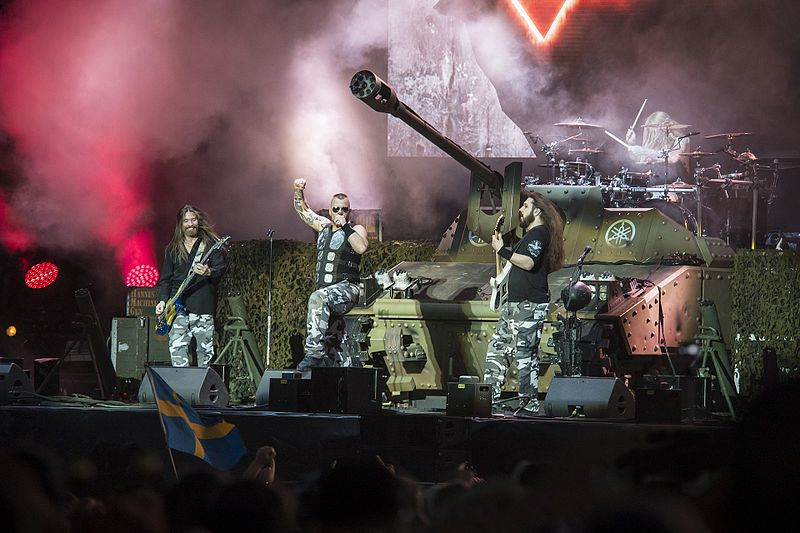

Sabaton es una banda sueca de power metal formada en 1999 en la ciudad de Falun. La gran mayoría de sus álbumes son acerca de eventos históricos, principalmente de guerras o batallas. Sabaton ha sido referido como una de los “cuatro grandes” bandas de power metal, junto con Helloween, Blind Guardian y DragonForce.
[text]
[text]
[text]
[text]
[text]
[text]
[text]
Joakim Brodén - vocalista principal, guitarra adicional (1999-presente), tecladista (1999-2005, 2012-presente)
Pär Sundström - bajista (1999-presente), coro (2012-presente)
Chris Rörland - guitarrista, coro (2012-presente)
Hannes Van Dahl - baterista, coro (2014-present)
Tommy Johansson - guitarrista, coro (2016-presente)
Richard Larsson - baterista (1999-2001)
Oskar Montelius - guitarrista, coro (1999-2012)
Rikard Sundén - guitarrista, coro (1999-2012)
Daniel Mullback - baterista, coro (2001-2012)
Daniel Mÿhr - tecladista, coro (2005-2012)
Robban Bäck - baterista (2012-2013)
Tobbe Englund - guitarrista, coro (2012-2016)
Frédéric Leclecq - guitara de ritmos (2001; remplaso a Sundén por paternidad)
Snowy Shaw - baterista (2012-2013; remplaso a Bäck debido a paternidad)
Daniel Sjögren - baterista (2017; remplaso a Van Dahl debido a paternidad)

Primo Victoria (2005)
Attero Dominatus (2006)
Metalizer (2007)
The Art of War (2008)
Coat of Arms (2010)
Carolus Rex (2012)
Heroes (2014)
The Last Stand (2016)
The Great War (2019)
The War to End All Wars (2022)
| Año | Nominado | Premio | Resultados |
|---|---|---|---|
| 2011 | Sabaton | Best Breakthrough Band | ganó |
| 2012 | Sabaton | Metal As Fuck | ganó |
| 2013 | Sabaton | Best Live Band | ganó |
| 2018 | Sabaton | best Live Band | ganó |
| Año | Nominado | Premio | Resultado |
|---|---|---|---|
| 2012 | Sabaton | Best Live Band | ganó |
| Año | Nominado | Premio | Resultado |
|---|---|---|---|
| 2012 | Sabaton | Best Swedish Group | ganó |
| 2012 | Sabaton | Best Swedish Live Act | ganó |
| 2013 | Sabaton/Carolus Rex | Best Swedish Album | ganó |
| 2013 | Sabaton | Best Swedish Live Act | ganó |
| 2013 | Sabaton | Best Swedish Group/Artist | ganó |
| Año | Nominado | Premio | Resultado |
|---|---|---|---|
| 2013 | Sabaton | The Year's hard rock/metal | ganó |
En 2008, el arzobispo Sławoj Leszek Głódź otorgó a Sabaton un auténtico sable de oficial polaco. El trasfondo era que la banda había destacado a los soldados polacos en algunas de sus canciones.
[text]